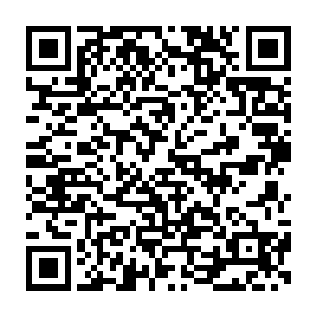

Associação Estendendo as Mãos Para as Mulheres
Apoio, assistência e respaldo para mulheres em situação de vulnerabilidade e violência doméstica
Fundada em 2018, a Associação Estendendo as Mãos Para as Mulheres nasceu da necessidade de oferecer apoio e assistência para mulheres em situação de vulnerabilidade e vítimas de violência doméstica na região de Franca e entorno.
Desde então, temos trabalhado incansavelmente para criar uma rede de apoio que ofereça suporte emocional, jurídico e material para mulheres que buscam reconstruir suas vidas.
Oferecer suporte integral para mulheres em situação de vulnerabilidade, promovendo sua autonomia, segurança e reinserção social através de atendimento multidisciplinar e ações de conscientização.
Ser referência no combate à violência contra a mulher e na promoção de uma sociedade mais justa e igualitária, onde todas as mulheres possam viver com dignidade e respeito.
Agimos com compaixão e compreensão das necessidades de cada mulher.
Garantimos sigilo e segurança para todas as mulheres atendidas.
Lutamos pelos direitos das mulheres e pelo cumprimento das leis.
Acreditamos na força da comunidade e do apoio mútuo.
(16) 991938894
evandasoares2008@hotmail.com
Rua Mauro Roberto de Mattos, n 550 - pacaembu, Franca/SP
Segunda a Sexta: 8h às 18h
Sábado: 8h às 12h
Sua contribuição é essencial para mantermos nossos projetos e continuarmos oferecendo apoio às mulheres em situação de vulnerabilidade. Veja como você pode ajudar:
Contribua com qualquer valor para ajudar a manter nossos projetos e ações de apoio às mulheres.
Associação Estendendo as Mãos Para as Mulheres
CNPJ: 43.999.116/0001-99
Banco: Cora SCFI - (999)
Agência: 0001
Conta Corrente: 1545472-2
Pix: 43.999.116/0001-99
QR Code para mandar Pix
Contribua com alimentos, produtos de higiene e outros itens necessários para as mulheres atendidas.
Local de Entrega: Rua Mauro Roberto de Mattos, n 550 - pacaembu, Franca/SP
Local de Entrega: AV: Ida Zero Zaninelo, n 2321 - Luiza I, Franca/SP
Junte-se a nós e faça a diferença na vida de mulheres que precisam de apoio. Preencha o formulário abaixo para se candidatar como voluntário.
É fundamental reconhecer os sinais de um relacionamento abusivo. A violência contra a mulher pode se manifestar de diversas formas: física, psicológica, sexual, moral e patrimonial.
Se você ou alguém que você conhece está em situação de emergência, não hesite em pedir ajuda:
Reconstruir a vida após o abuso é um processo que requer apoio. Nossa associação está aqui para ajudar, mas existem outros recursos:
Ter um plano pode ser crucial em momentos de crise. Pense em:
Utilize também aplicativos de segurança, como o App SP Mulher Segura para iOS e Android, que pode ser uma ferramenta útil para acionar ajuda rapidamente.
É importante lembrar que a culpa NÃO é sua. Você tem o direito de viver com dignidade e segurança. Não tenha medo ou vergonha de procurar ajuda. Estamos aqui para estender as mãos para você.